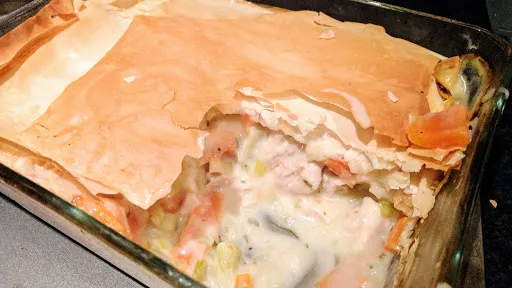

Superhealthy chicken pie
55 mins
Serves 4

Ingredients
For the filling
- 450 ml chicken stock
- 100 ml white wine
- 2 cloves garlic, finely chopped
- 3 sprigs thyme
- 1 sprig tarragon + 1 tbsp chopped leaves
- 500 g boneless skinless chicken breasts
- 225 g carrots, cut into batons
- 225 g leeks, sliced
- 2 tbsp cornflour, mixed with 2 tbsp water
- 3 tbsp creme fraiche
- 1 heaped tsp Dijon mustard
- 1 tbsp chopped parsley leaves
For the topping
- 70 g filo pastry, 3 sheets cut into 4 pieces
- 1 tbsp rapeseed oil
Instructions
- Pour the
stock450 ml
and wine100 ml
into a frying pan with a lid. Add the garlic2 cloves
, thyme3 sprigs
, tarragon1 sprig
sprig and carrots225 g
, bring to the boil then simmer for 3 minutes. Add the chicken500 g
with some pepper, cover and simmer for 5 minutes. Scatter the leeks225 g
over the chicken500 g
, cover and simmer for 10 minutes. Remove from the heat and leave to cool for 15 minutes.
- Strain the
stock450 ml
into a jug - you should have 500 ml. Tip the chicken500 g
and veg into a 1.5-litre pie dish. Discard the herbs. Pour the stock450 ml
back into the pan, then slowly pour in the cornflour2 tbsp
mix. Boil, stirring, until thick. Remove from the heat. Stir in the creme fraiche3 tbsp
, mustard1 heaped tsp
, chopped tarragon1 sprig
and parsley.
- Heat the oven to 180°C/Gas 6. Shred the
chicken500 g
meat. Stir the suace into the chicken500 g
mixture in the dish.
- Layer the
filo70 g
on top of the filling, brushing each sheet with oil1 tbsp
. Scrunch up the filo70 g
and tuck into the dish. Cook on a baking sheet for 25 minutes until golden.
-
kcal
320
-
fat
10 g
-
saturates
4 g
-
carbs
22 g
-
sugar
7 g
-
fibre
3 g
-
protein
34 g
-
salt
1.37 g
BBC Good Food: Low-fat Feasts
Short Link
Long Link